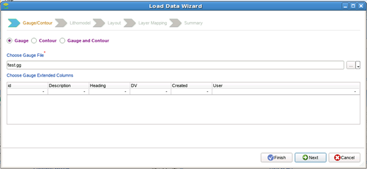
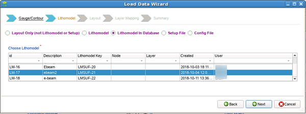
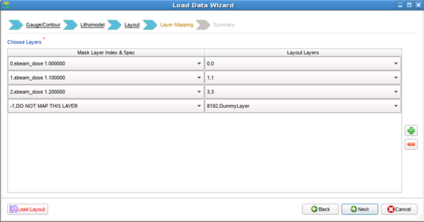
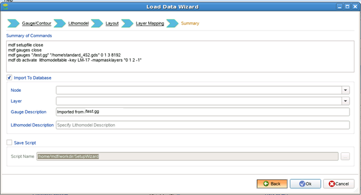

After removing
long range effects in MPC Center, you load the resulting gauge file
into the Calibre nmModelflow database.
Procedure
- In the upper set of tabs, switch to the Gauges tab and click Load.
- In the Load Data Wizard, leave the selector
at Gauge, and use the file navigator to select the post-long range
adjustment gauge file, then click Next.

- In the Lithomodel page, choose Lithomodel in
Database, and select one of the litho models you created in the
previous task, then click Next.

- In the Layout page, navigate to the relevant
layout file, select it, then click Next.
- In the Layer Mapping page, select the layers
in the litho model and match them to the corresponding layout layers.

- In the final Summary screen, enter any uniquely
identifying labels for the node, layer, gauge data file, and lithomodel,
then click OK.

Results
The new gauge file is given an entry in the database,
and can be used as an input to a calibration job.